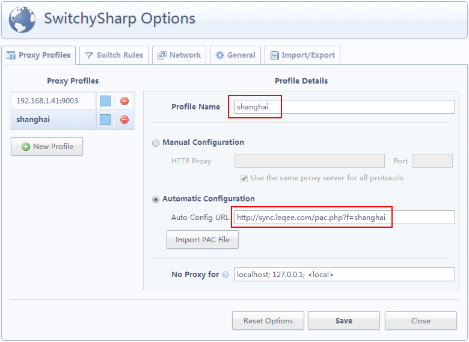
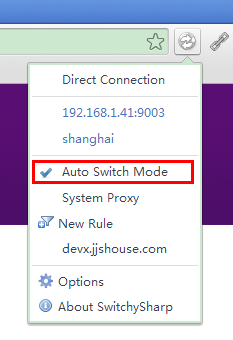
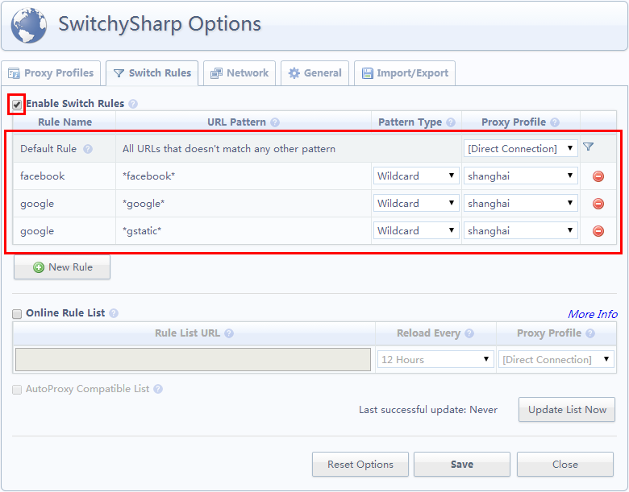

<article class="article">
    <h1>浏览器代理插件使用方法</h1>
    <h3>Chrome代理插件——Proxy SwitchySharp</h3>
    <h4>添加代理</h4>
    <p class="tac mt2"></p>
    <h4 class="mt4">Chrome自动切换代理</h4>
    <ul class="summary">
        <li>
            选择Proxy SwitchySharp连接模式
            <p class="tac mt2"></p>
        </li>
        <li>配置切换规则
            <p class="tac mt2"></p>
        </li>
    </ul>
    <h3 class="mt4">设置火狐代理附加组件——FoxyProxy</h3>
    <p class="tac mt2"></p>
</article>